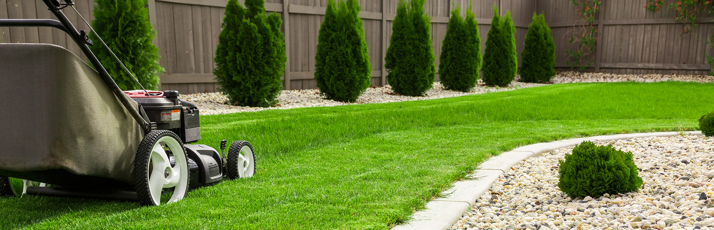

LAWN CARE
We are company dedicated to provide top quality work when meeting your lawn and landscape needs. Imagine quality family time, rest and relaxation, and leaving the dirty work up to us.
OUR SERVICES

SPRING & FALL CLEANUP
Our Spring and fall clean-up is the process of removing all leaves, branches and other debris that have accumulated over the season throughout your property and landscape beds and hauling away the debris from your property.
FLOWER BED INSTALLATION
Our goal is to help you install flower beds and keep flower beds or landscaping healthy, clean, safe and attractive. Proper care will keep your flowers, shrubs and bushes as fresh as the day you planted them. Making sure your lawn is pleasent to look at.